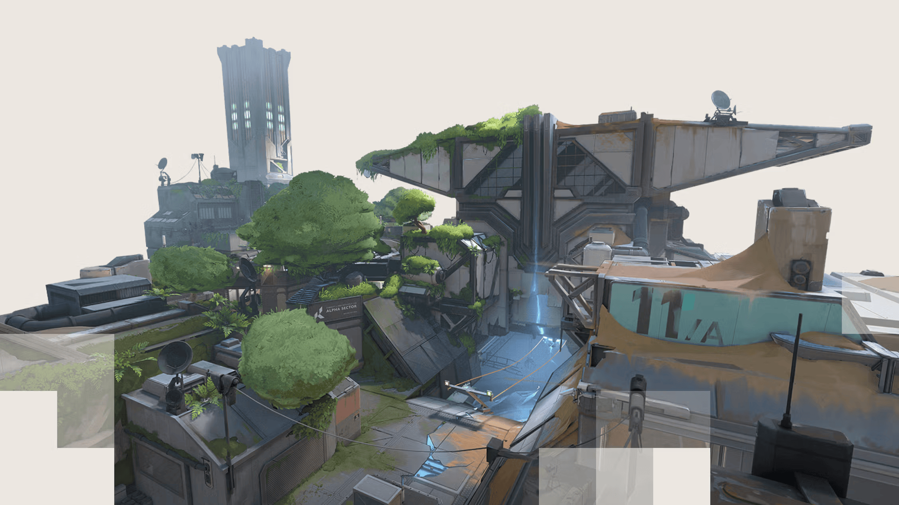

Fracture is a unique and innovative map characterized by its dual-site layout, encouraging strategic plays and creative tactics. Set in a remote research facility, the map features a blend of industrial structures and natural terrain, offering diverse combat scenarios and opportunities for flanking.
